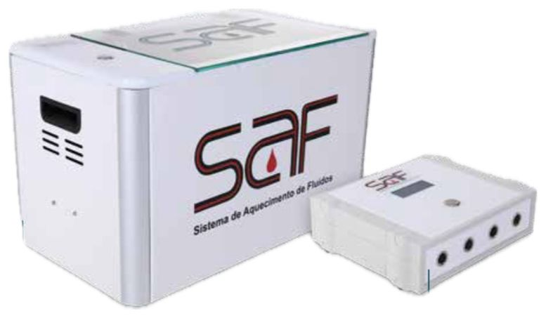

SAF - Sistema de Aquecimento de Fluidos

Descrição: Tecnologia de aquecimento e manutenção da temperatura de fluidos intravenosos, essencial para prevenção e tratamento da hipotermia no ambiente hospitalar e cirúrgico.
Componentes:
- CASE: Acomoda, organiza e aquece os fluidos.
- CMT: Console Microcontrolador de Temperatura.
- DTI: Dispositivo Termorregulador de Infusão (pequeno e grande).
Locais de Utilização: Centros Cirúrgicos, UTIs, Berçários, Internação, Recuperação e Unidades de Resgate.
Benefícios:
- Redução da hipotermia perioperatória.
- Redução do tempo de UTI em até 43%.
- Menor risco de infecções e eventos cardíacos.
- Maior conforto, segurança e satisfação dos pacientes.
- Melhora da rotatividade hospitalar e redução de custos.
Registro ANVISA: 8.07267.40005
Thopaz+ - Sistema de Drenagem Cardiotorácica Digital


Descrição: Solução digital de drenagem torácica, com monitorização precisa e em tempo real da pressão intrapleural, fuga de ar e volume de fluidos.
Benefícios:
- Monitoramento digital de pressão, fuga de ar e drenagem.
- Redução do tempo de internação.
- Facilita decisões clínicas precisas.
- Design leve, portátil e silencioso.
- Histórico de 72 horas e exportação via USB.
- Redução de resíduos com recipientes otimizados.
Componentes:
- Recipientes descartáveis (300ml, 800ml e 2L).
- Estação de carga e suporte de calha.
- Tubulação de lúmen duplo para evacuação e monitoramento.
Fabricante: Medela AG - Suíça